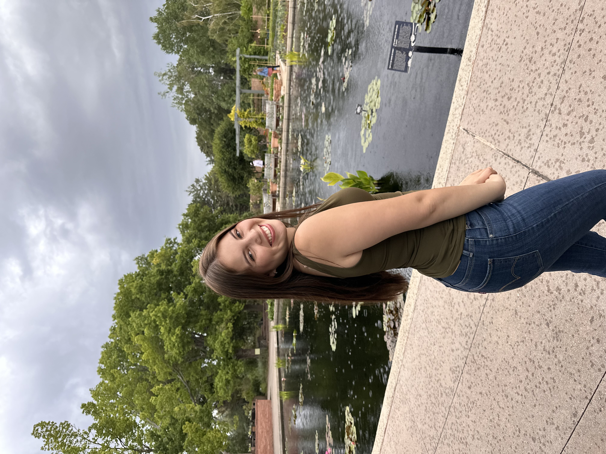

Kassandra
Media Studies | 4th Year
My name is Kassandra Ruiz and I am a first generation, Latinx student from the Bay Area. I enjoy creating videos related to my lifestyle, beauty, and fashion. I have a really bad sweet tooth and am addicted to ice. On campus I am part of the Latinx Business Student Association, Her Campus Media, and The Bearettes (majorette style dance team). This summer I will be a marketing intern at PepsiCo in New York and I am currently getting ready to study abroad in Brazil for Fall 2024.
- Mezzo
- Tacos Sinaloa
- Chiptole

Click Here
- Something I learned was that you should an have an intent to your website. I did not previously think things like this were important if you were making a website about yourself, so I want to take this into consideration.
- My favorite part of this article was when they showed desconstructions of apps such as Twitter. It highlighted the differnet spaces and bold texts of the app to demonstrate how it contributes to users experience.
- "Next time you’re sitting in a Lyft or waiting on a friend, open up an app and think through the reasons why the designers chose to design it that way.
- I would give this article a 7/ 10 because it was a good introduction to aspects of a website.